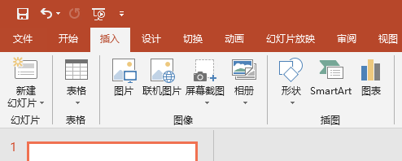
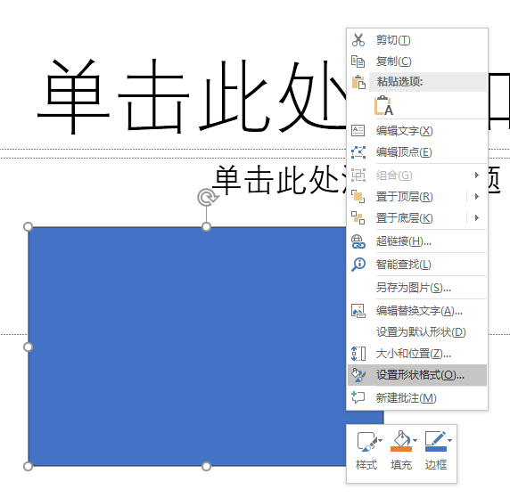
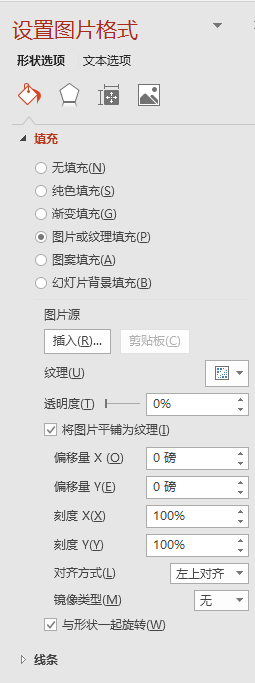
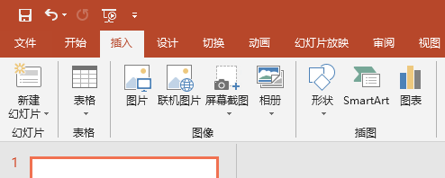
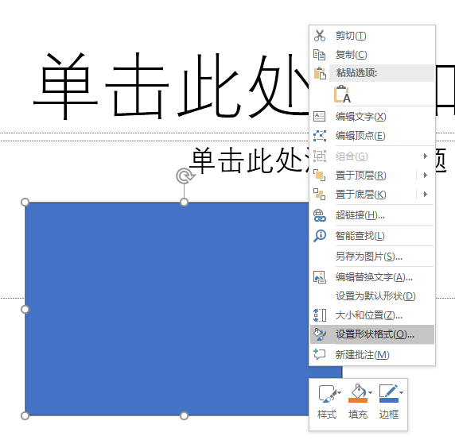
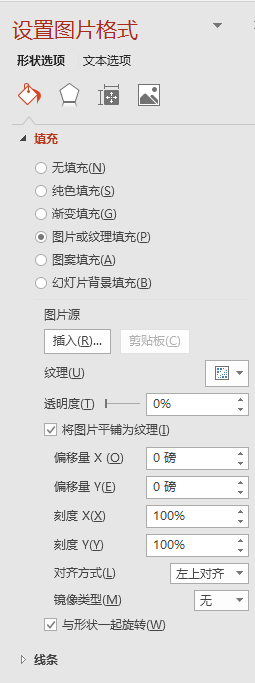

PowerPoint
//
对图片设置透明度
点击"插入"->"图片"选择要插入的图片

点击"插入"->"形状"选择一个要使用的形状例如"矩形"
右键单击"图片"或"形状"弹出菜单

打开"设置图片格式"面板

在右面的"设置图片格式"中"填充"->"图片或纹理填充"
选择插入的图片然后复制例如用Ctrl+c, 在右面的"设置图片格式"中的"填充"中的"图片源"下的"剪切板"按钮此时已经可用点击后插入的形状对象已经变为我们设置的图片
这时直接调整"透明度"选项的值即可

点击"插入"->"形状"选择一个要使用的形状例如"矩形"
右键单击"图片"或"形状"弹出菜单

打开"设置图片格式"面板

在右面的"设置图片格式"中"填充"->"图片或纹理填充"
选择插入的图片然后复制例如用Ctrl+c, 在右面的"设置图片格式"中的"填充"中的"图片源"下的"剪切板"按钮此时已经可用点击后插入的形状对象已经变为我们设置的图片
这时直接调整"透明度"选项的值即可